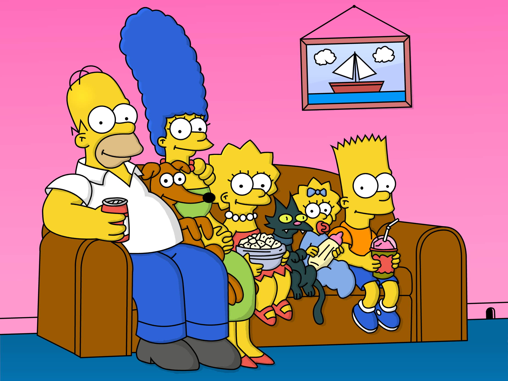
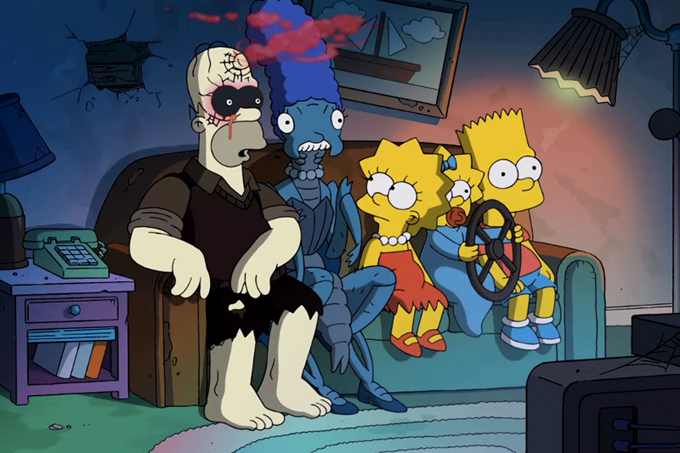
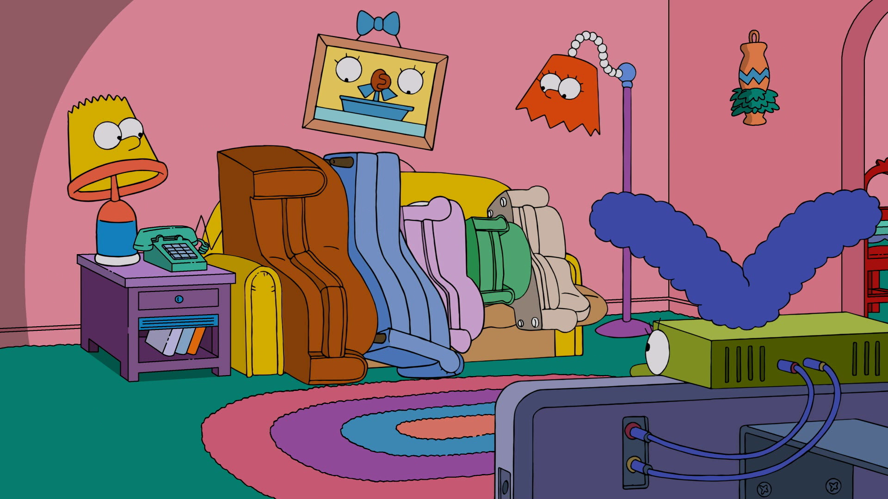
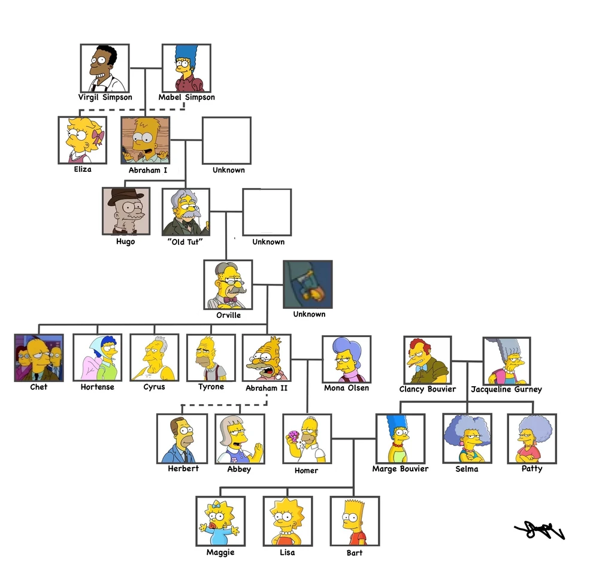

The first known Simpson was Sven. He married Claretta Ethridge and had two children. One of them, Rupert, married Winifred Running Goat, a Native American. They had five children, which included Trixie and Garwood. Trixie married a Stemple and Garwood married Clowta Stillman, and they had four offspring. Howland married Gabby Crouse and then he had five children. They were Lou, Dulcine, Hugo, Gaston and Tut. Lou married Zorina Ovadia and they had three children: Eckhardt, Bob and Twyla. Eckhardt married Griselda Johnson and had two sons and two daughters.
Tut Simpson married "Happy" Dinsdale and they had four children, including Orville. Orville married Yuma Hickman. They had Abraham Simpson and his brothers. They moved back to the US and Abraham met Mona. They had Homer, who married Marge Bouvier (joining the Bouvier family with the Simpsons) and had Bart, Hugo (non-canon), Lisa, and Maggie. Abe also had an affair with an unknown woman, which resulted in Herb, who was adopted by the Powell family. During World War II, Abe had an affair with Edwina, which resulted in Abbie.
Although, the Simpsons Uncensored Family Album, published in 1991, is sometimes contradicted by the Simpsons recent episodes. In "The Color Yellow", Grandpa Simpson tells Lisa the story of Virgil and Mabel Simpson, which directly contradicts the existence of the album's relatives. If it's possible that Grandpa's altered mind invented this story, it's also possible that a new canon Simpson family tree has been established, ignoring the Album which is almost thirty years old. Also Abraham appeared as an only child, and numerous brothers appeared or are mentioned on recently episodes. Homer's mother name appeared as Penelope Olsen which was one of her aliases and not Mona Simpson. A lot of anonymous Homers relative appeared on "Lisa the Simpson".
Marge's mother name appeared as Ingrid Gurney and in the TV show, it was revealed as Jacqueline Bouvier. In the book, she appeared as an only child. And in the TV show, she had a maiden sister called Gladys and a brother called Lou who was mentioned in one episode.
Marge paternal grandparents in the book appeared as Pépé Bouvier and Bambi Petitbois. And it contradicts to an episode that revealed that they were Nazis, and their names were Genevieve and Meaux Bouvier. And the design of the characters was completely different than the book, taking in the show a similar design to Moe Szyslak and Marge (although it could be just for visual representation).
This eventual new canon family tree would be the following:
